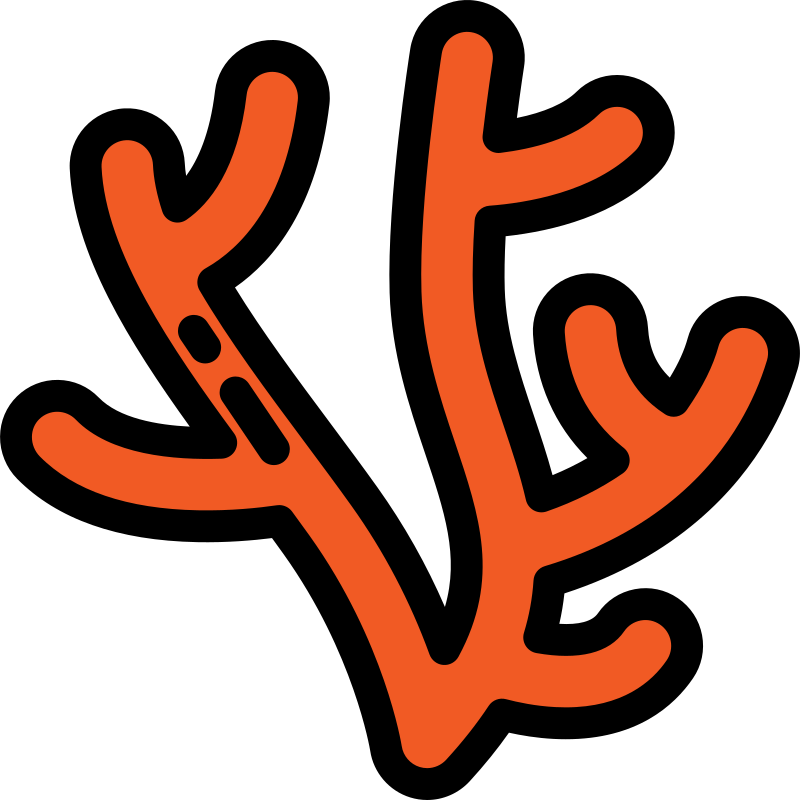

HEOR evidence journey
Finding access should not feel like finding Nemo
It is not impossible. But if HEOR and real-world evidence planning arrive after Phase 3, launch teams end up searching for payer answers that should have been mapped in Phase 2.
Without the map, the access route gets rough
Payer objections are predictable before launch. The hard part is making sure evidence planning sees them early enough.

Ph 2
Map the reef
Payer comparisons and access risks remain actionable.
Ph 3
The current locks in
Endpoints and comparators get harder to change.
Launch
Search under pressure
Payer-ready answers are needed before access decisions.